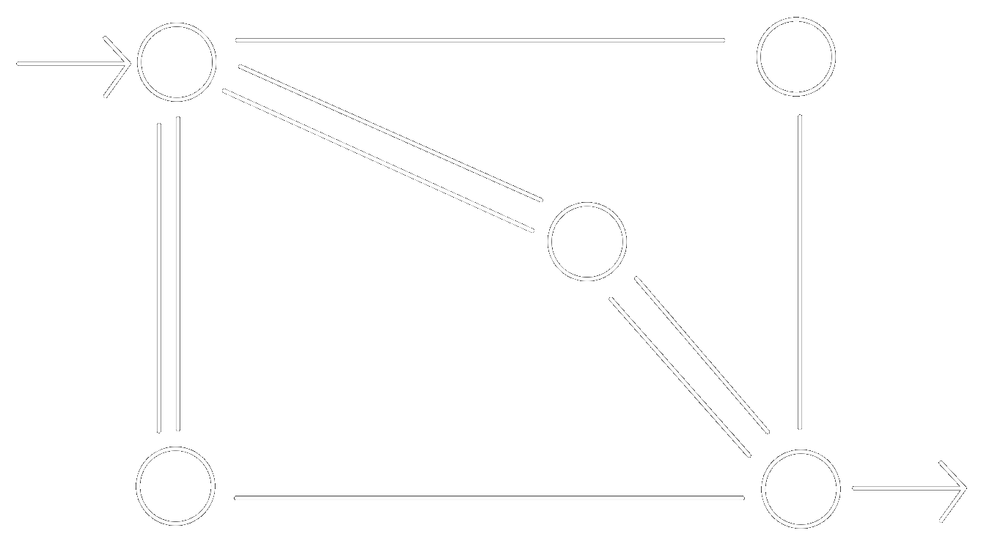

Any algorithmic task can be sabotaged to create real-life versions of a hostile environment. This can be done by turning it into a game, which can be studied by know techniques. Thus, in Clausewitz’ immortal phrasing, game theory is “algorithmics pursued by other means”.
van Benthem, An Essay on Sabotage and Obstruction
Fix a graph. The sabotage game has two players: Blocker and Runner. Every turn, Blocker erases one edge and then Runner moves one step. Runner wins the game iff they can reach the ‘exit’ of the graph.
In the graph below, who wins the game?
For clarity's sake: the start is at the upper left corner, and the exit is at the lower right corner. The graph is a non directed multigraph, so there are two paths from the start to the center and so on.
Blocker wins the game.
Blocker first cuts one edge connecting the center to the bottom right. They then erases the nodes connecting Runner’s current position and the exit node (if there is no such edge, they may erase any edge).
This puzzle is originally by van Benthem.